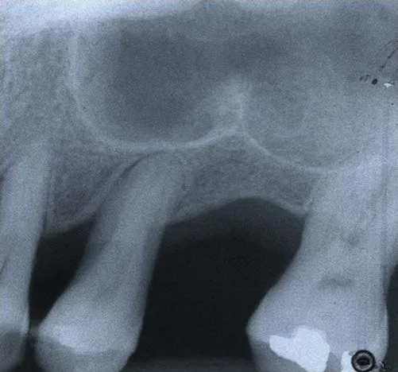
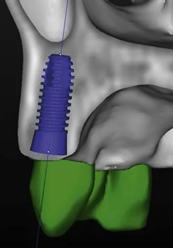

نسخه استخراجشده؛ ترجمه یا تأیید علمی انجام نشده است. وضعیت: captured
ماگزیلای خلفی سختترین ناحیهی کاشت است و دلیلش یک تلاقی نامساعد است.
تراکم استخوان. این ناحیه محل معمول استخوان D4 است — کمتراکمترین دسته. ترابکولار آن از سایر نواحی دنددار ظریفتر است.
نیروی اکلوزال. در همان حال، این ناحیه بیشترین بار جویدن را تحمل میکند. یعنی ضعیفترین استخوان زیر سنگینترین نیرو.
الگوی تحلیل. پس از از دست رفتن دندانهای خلفی ماگزیلا، تحلیل ابتدا عرض را بهقیمت صفحهی استخوانی لبیال کم میکند. اما نکتهی امیدبخش این است که چون ریج اولیه در این ناحیه پهن است، حتی با کاهش قابلتوجه عرض، معمولاً میتوان ایمپلنتهای روتفرم با اندازهی مناسب کاشت.
و از سمت بالا، سینوس ارتفاع را محدود میکند. پس در این ناحیه همزمان با سه محدودیت روبهرویی: تراکم، ارتفاع، و نیرو.

وقتی استخوان ضعیف است و نیرو زیاد، پاسخ در بیومکانیک است.
قطر، نه طول. چون تنش عمدتاً در ناحیهی کرستال جمع میشود، افزایش قطر ایمپلنت روش مؤثری برای افزودن سطح در همان ناحیهی پرتنش است. به همین دلیل ایمپلنتهای Division B در ماگزیلای خلفی ایدهآل نیستند. و اگر ناچار به استفاده از ایمپلنت باریک شدی، باید تعداد بیشتری کاشت و آنها را اسپلینت کرد.
طبقهبندی سابآنترال (SA). در این نظام، ماگزیلای خلفی بر پایهی ارتفاع استخوان باقیمانده و رابطه با سینوس دستهبندی میشود: SA-1 کاشت بدون ورود به سینوس، SA-2 بلند کردن مختصر ممبران سینوس (۱ تا ۲ میلیمتر) بدون پیوند و کاشت همزمان، SA-3 کاشت همزمان با پیوند، و SA-4 پیوند سینوس و سپس تأخیر طولانی پیش از کاشت.
و نکتهای که این طبقهبندی را بالینی میکند: هر دسته به دو زیرگروه عوامل نیرویی مساعد و نامساعد تقسیم میشود. مثلاً در SA-1 با شرایط مساعد — استخوان D2/D3، نیروی کم — ارتفاع استخوان میزبان ۸ میلیمتر و ایمپلنت ۸ میلیمتر پذیرفتنی است؛ ولی در شرایط نامساعد — استخوان D4، نیروی زیاد، نسبت تاج به ایمپلنت بالا — همان دسته ۱۰ میلیمتر میطلبد.
یعنی عدد ثابتی وجود ندارد: همان ارتفاع در یک بیمار کافی است و در بیمار دیگر نه. آنچه فرق میکند، نیرو و تراکم است.

نوع سؤال: ساخت کلمه · 5 خانه
حروف منبع: ع · د · م · س · ا